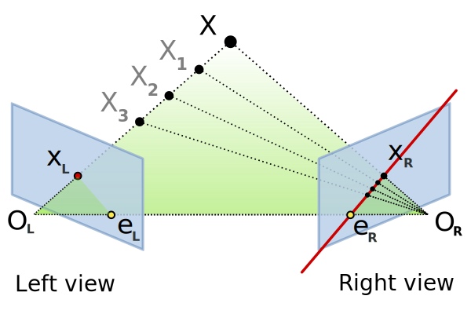

Projection Matrix
1/f = 1/do + 1/di
Where,
f => Focal Length of the camera
d0 => Distance of the object from the lens
di => Distance b/w the lens and the image plane (camera sensor)
since do >> di hence we can say that the image plane (camera sensor) is at the focal length
Hence by the law of similar triangles we can say that
hi = f x ho/do
Where,
hi = height in the image
f = focal length
ho = height of the object
do = distance of the object
So we can say that the an point 3D in X,Y,Z co-ordinates gets converted to a point
in 2D co-ordinate as x,y.
The Matrix that it forms is
[x] [f 0 0] [X]
S [y] = [0 f 0] [Y]
[1] [0 0 1] [Z]
[1]
This is projection matrix. And where the frame is not aligned with the focal point we add the rotation and translation matrix
Hence we get camera intrinsic properties in (focal length etc) in one matrix and extrinsic properties (rotation and translation) in one matrix.
Epipolar Geometry

Lets say you are capturing images using 2 cameras. (stereo vision)
The blue plane in the above picture is the images captured by camera left and camera right respectively.
OL => center of the left camera
OR => Center of the right camera
And we are trying to capture the object X.
Now we will discuss the terms
-
Epipolar plane - The plane getting formed by joining the centers of the cameras and the object is called as epipolar plane.
-
Epipolar line - The line OL-X is actually a
point for camera leftbut aline for camera rightsince the viewing angles changed. Hence this line (line er-Xr ) is called as Epipolar line.
Detecting Depth from Stereo images

Lets say we have 2 cameras side by side with same 3D calibration (i.e 0 rotation and B translation X domain)
Then the projection Matrix of the Right camera is
Where, f - Focal length of the camera X,Y,Z - Real World co-ordinates of the object B - Is the distance between the centers of the 2 cameras u0, v0 - are the x,y co-ordinates of the Principle point. x',y' - is the co-ordinates of the object in the image
And the To calculate depth we can use this formula
The term (x-x') is called as disparity.
Disparity can be calculated using available OpenCV functions
//Compute disparity
cv::Mat disparity;
cv::Ptr<cv::StereoMatcher> pStereo =
cv::StereoSGBM::create(0, //minimum disparity
32, //maximum disparity
5); //block size
pStereo->compute(rectified1, rectified2, disparity);
This will give us the value of (x-x') then we can multiply it by focal length of the right camera and the distance between the Centers of the camera will give you the Real world Depth of the point.
Practical
I Could not do a practical fully because of I could not capture Stereo images of an object. For now I am moving this to TODO.
Practical Reference - https://albertarmea.com/post/opencv-stereo-camera/
References
- https://www.pyimagesearch.com/2015/01/19/find-distance-camera-objectmarker-using-python-opencv/